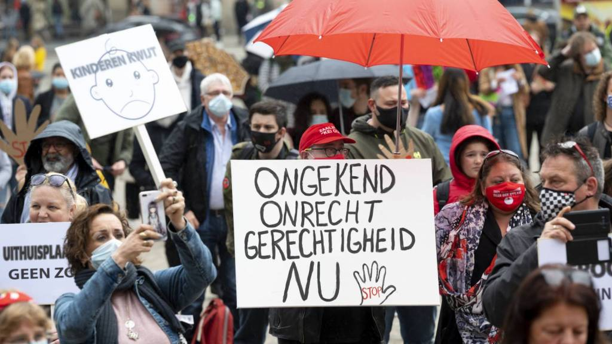

explains the goal of your data science effort (i.e., what is the real-world problem that your effort would
hopefully help to address)
The Dutch government wanted to more efficiently analyze people applying for child care benefits through an
machine learning algorithm that assessed applicants based on “risk indicators” that ended up punishing some
families even if they had a false fraud allegation. This forced many families to give up their children to foster
care as the algorithm wrongly classified these applicants as risky. The goal of the Dutch government when they
first implemented this model to assess risk profiles was actually a good one: the learning algorithm would in
theory more efficiently detect fradulent individuals which would eliminate those taking advantage of these benefits
and provide more resources for those that actually need it.
outlines a proposed data collection and measurement system for this effort
The data used by the model was the data given by the individual when they first signed up for the childcare benefits
program through the Dutch Tax Authorities. This data included things like race, income, nationality, gender,
family size, and other important data for assessing taxes and determining eligibility for childcare benefits. Using
this data, the model then predicted a risk score indicator to detect fraud early and thus discontinue the benefits to
the individual (Politico). These individuals with high risk scores were then put on a secret list, unable to figure out
why they were on it and being forced by the Dutch Government to pay back the benefits they had received from the program.
identifies at least two significant ethical and/or societal concerns about this collection & measurement system
Furthur investifgation into the model shows even more horrifying revealations. Indicators that led one to get onto the list
included being of "non-Western appearance," causing minorites to disproportionately be put onto the blacklist thus
increasing their risk scores and getting dropped from the child benefits program and forced to pay back the governement
with money they most likely don't have if they were part of the program to begin with. These individuals, primarily
mothers trying to care for their families, relied on these benefits to help them provide for their kids. Without the
benefits, and in fact actually have to pay back the governement what they were previously receiving, was too much for
many which is what led to so many children being given up to foster care. Families had nowhere else to turn to and the
only option they saw left was foster care. It is wrong to put individuals on a list simply because of their race or
nationality, the exact reason why many of these mothers were denied benefits and received their high risk scores from
the algorithm in the first place.
I also can't believe that even when an individual was forced to pay back the benefits to the government, they couldn't
find out why there had suddenly been denied or forced to repay. Without knowledge of what they did wrong, how can one ever
hope to lower their score? The failing of the Dutch Government to provide this to individuals is in part because there was
a complete lack of oversight in the how the model was perforiming on this real data due to the clear bias that existed
in the implementation used in the algorithm.
provides responses to those concerns
It is really sad to see that this was some of the "magic" used by the model to determine if an applicant turned out to
be fradulently receiving benefits. A team should have been in place to accurately assess if the model was correctly getting
rid of fraudulent benefactors or looking into the kinds of profiles that were getting flagged with high risk scores and
eventually ending up on the blacklist. In order to prevent a situation like this from happening again, a team must be put in
place to check how the model is performing on real data and adjust and update the model / algorithm. If a team had been
established by the Dutch governement to monitor how the algorithm was evalutating risk scores for real profiles, those of
minority races and nationalities wouldn't have been signigficantly negatively impacted as they were under the current model.
For example, one way in which the current model was completely unethical was by assigning those with a "non-Western" appearance
a high risk score and thus ending them on the blacklist. It is horrible that this race bias was existent in the algorithm and
thus discriminated against those with a minority background. Even more horrifying was that this way of evaluating those
receiveing childcare benefits continued for years after the initial model was implemented due to the sheer lack of oversight
on behalf of the Dutch government and tax authority once this system was starting to become more heavily used and integrated
into determining the validity of a profile to remove fradualent benefactors. With a proper managament team in place, the
analysists would hopefully see that certain groups - like those of minority status - were more proportionaltely given high risk
scores and thus flagged as fradulent and put on the blacklist and would have investigated why the model was evaluating certain
individuals in this way. The analysist would have seen that the profiles were mainly minorites and thus would heopfully bring
this ethical concern up at a meeting in the business to address the issue.
Another greivance the victims of the childcare benefits scandal had was with how they were notified of the change in their benefits
status. Those that were affected were essntially sent a letter letting individuals know that they would no longer receive help from
the government and would actually have to payback some of what they used to receive as a tax. What was really unethical was how
victims when they would inquire about why they were placed on such a list were met with silence. The Dutch tax authority couldn't
tell users why they were placed on such a list because of both the lack of oversight in implementing the model and the reasons why
someone would end up on the list were most likely becuase of the inheritly racist bias that was in the algorithm. Without understanding
why they were on the list, individuals didn't know how they could ever get off of it and remedy their situaiton besides paying the fine
issued to them by the governement. Similar to the concern of denying individuals based on race or nationality, a monitoring team should
have been in place by the Dutch government so that such bias would have been updated and removed from the model to prevent the
miscalculation of risk scores.
Works Cited:
Heikkilä, Melissa. “Dutch Scandal Serves as a Warning for Europe over Risks of Using Algorithms.”
POLITICO, POLITICO, 13 Apr. 2022,
https://www.politico.eu/article/dutch-scandal-serves-as-a-warning-for-europe-over-risks-of-using-algorithms/.